Giới thiệu
Launchkey Mini [MK3] là bộ điều khiển bàn phím MIDI (MIDI keyboard controller) gọn nhẹ nhất của Novation. Dù có kích thước nhỏ gọn, Launchkey Mini được trang bị nhiều tính năng mạnh mẽ và quy trình làm việc tinh gọn giúp nâng tầm sản xuất âm nhạc và biểu diễn của bạn.
Launchkey Mini tích hợp hoàn hảo với Ableton Live (và các DAW khác) cho cả sản xuất lẫn biểu diễn. Bạn có thể di chuyển và điều khiển Session View của Live, chơi và thu clip (đoạn âm thanh), chỉnh hiệu ứng và nhiều hơn nữa mà không cần nhìn vào máy tính. Ngoài ra, chúng tôi còn cấp cho bạn giấy phép Ableton Live Lite nếu bạn cần.
Launchkey Mini có một arpeggiator sáng tạo (gọi là Arp — trình tạo arpeggio, tức chơi lần lượt từng nốt của hợp âm), cùng chế độ Fixed Chord — hợp âm cố định — cả hai đều giúp bạn dễ tìm ra ý tưởng âm nhạc mới. Các pad (đệm nhạy lực) của Launchkey Mini mang Session của Ableton đến tận đầu ngón tay bạn với màu RGB đầy đủ, nhờ đó bạn biết chính xác mình đang chạy clip nào. Cuối cùng, bạn có thể biến Launchkey Mini thành bộ điều khiển hoàn hảo cho phòng thu hoặc khi mang đi nhờ các Custom Mode (chế độ tùy chỉnh), nơi bạn có thể tùy chỉnh các núm xoay (knob) và pad thông qua Novation Components.
Launchkey Mini còn có một cổng TRS MIDI Out 3.5mm — cổng xuất MIDI analog để kết nối với các synth phần cứng và máy trống. Điều này có nghĩa là bạn có thể sử dụng nhiều chức năng của Launchkey Mini mà không cần máy tính!
Nếu cần hỗ trợ, vui lòng liên hệ support.novationmusic.com.
Tính năng chính (Key Features)
- Tích hợp Ableton Live — chạy clip và scene, điều khiển mixer của Live, chơi instrument và Drum Rack, capture MIDI, v.v.
- Tích hợp với các DAW khác (Apple Logic Pro X, Reason của Propellerhead, v.v. và HUI)
- Kết nối với phần cứng qua cổng TRS MIDI Out 3.5mm
- 25 phím mini nhạy lực (velocity-sensitive)
- 16 pad RGB nhạy lực
- 8 núm xoay (rotary knob)
- Arpeggiator mạnh mẽ và sáng tạo để nhanh chóng tạo ý tưởng
- Chế độ Fixed Chord
- Điều khiển transport Play/Record
- Custom Mode cho phép tự ánh xạ núm và pad theo ý muốn
Lưu ý: Bộ chuyển đổi TRS MIDI Out 3.5mm sang MIDI DIN có bán tại novationmusic.com.
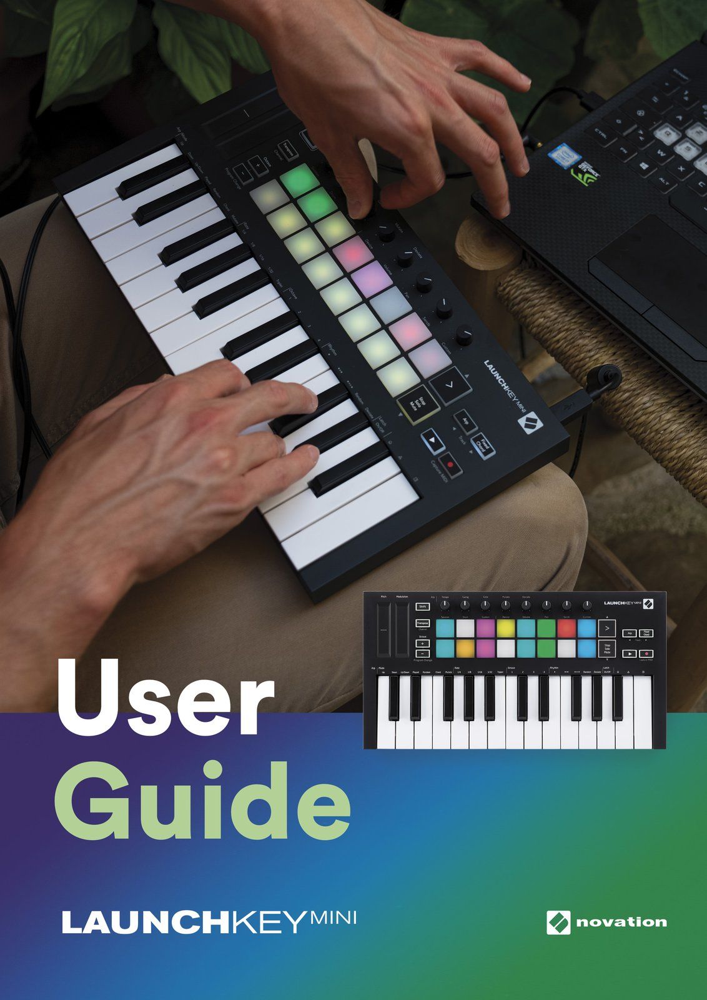
Trong hộp (What’s in the Box)
- Launchkey Mini
- Cáp USB Type-A sang B (dài 1,5 m)
- Hướng dẫn an toàn (Safety Instructions)
Bắt đầu sử dụng Launchkey Mini [MK3]
Chúng tôi đã làm cho việc bắt đầu với Launchkey Mini dễ dàng nhất có thể, dù bạn là người mới làm beat hay một nhà sản xuất kỳ cựu. Công cụ Easy Start Tool — công cụ khởi động nhanh cung cấp hướng dẫn từng bước để cài đặt, tùy chỉnh theo nhu cầu của bạn.
Chúng tôi sẽ cung cấp đúng những gì bạn cần, dù bạn chưa từng làm nhạc bao giờ, hay chỉ muốn tải phần mềm đi kèm.
Mass Storage Device — Khi kết nối Launchkey Mini với máy tính, thiết bị sẽ xuất hiện như một “ổ lưu trữ” (giống ổ USB). Mở nó lên và nhấp vào liên kết Click Here to Get Started.url.
Việc này sẽ mở Easy Start Tool trực tuyến của chúng tôi, giúp bạn bắt đầu ngay, hoặc đưa bạn thẳng tới phần mềm đi kèm — do bạn chọn!
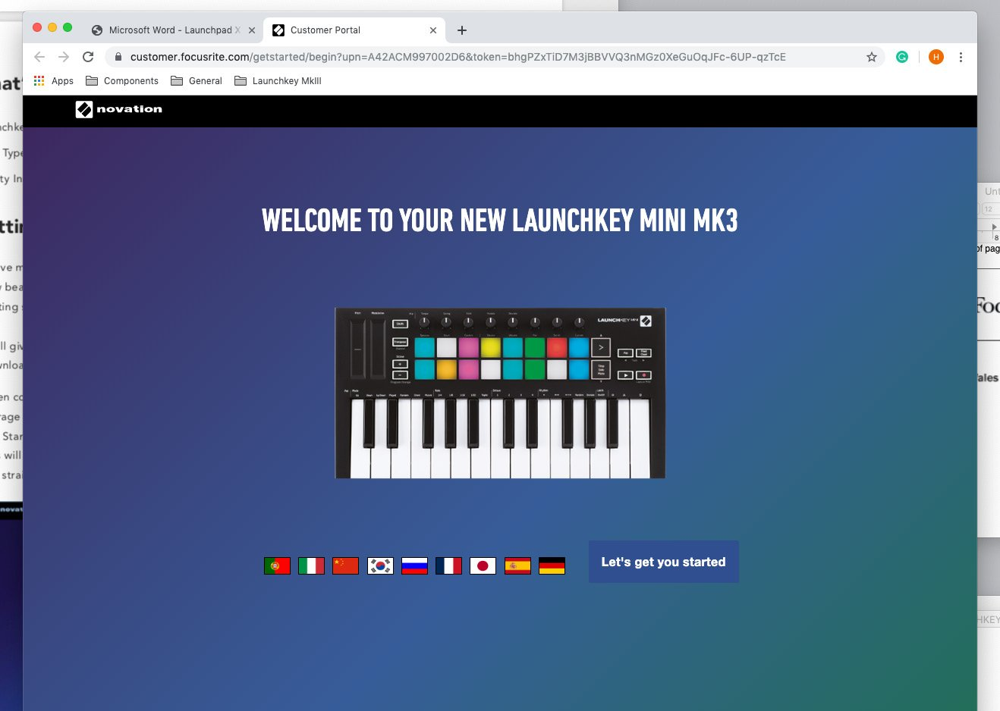
Trong quá trình này, bạn có thể đăng ký Launchkey Mini [MK3] để truy cập phần mềm đi kèm. Chúng tôi cung cấp mọi thứ bạn cần để bắt đầu làm track (bản nhạc).
Ngoài ra, bạn cũng có thể đăng ký Launchkey Mini bằng cách vào customer.novationmusic.com/register (như hình dưới). Sau đó bạn cần tạo tài khoản và nhập số serial (số seri) của Launchkey để truy cập phần mềm đóng gói.
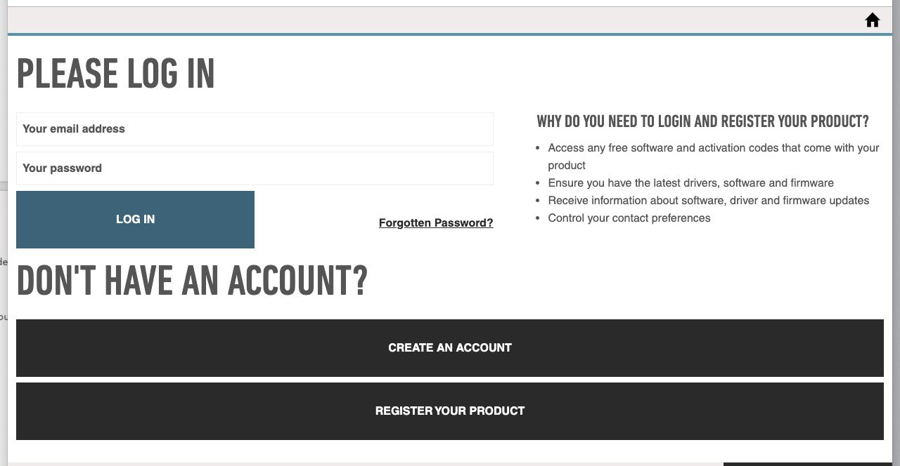
Kết nối (Getting Connected)
Kết nối với máy tính
Launchkey Mini được cấp nguồn qua bus (bus-powered — nhận điện trực tiếp từ cổng USB), nghĩa là thiết bị bật ngay khi bạn kết nối với máy tính bằng cáp USB.
Dùng làm bộ điều khiển MIDI độc lập (Standalone)
Nếu bạn muốn dùng cổng xuất MIDI 3.5mm trên Launchkey Mini mà không cần máy tính, hãy cấp nguồn cho thiết bị bằng bộ nguồn USB tiêu chuẩn (5V DC, tối thiểu 500mA).
Lưu ý: Launchkey Mini chỉ tương thích với Circuit khi dùng bộ chuyển đổi TRS MIDI Type A. Nhiều sản phẩm Novation khác (như Launchpad Pro) cũng cần thêm bộ chuyển Type B để giao tiếp đúng với Launchkey Mini qua bộ chuyển Type A của nó.
Kết nối với thiết bị di động
Android
Để sử dụng Launchkey Mini với thiết bị Android, chúng tôi khuyến nghị dùng bộ chuyển đổi USB OTG sang USB.
iOS
Để sử dụng với thiết bị iOS, hãy dùng Lightning to USB 3 Camera Adapter của Apple kèm một sạc Lightning 2.4A riêng.
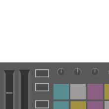
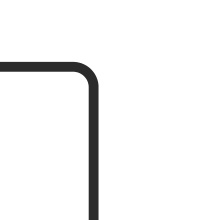
Tổng quan phần cứng (Hardware Overview)
Trang phần cứng gốc đánh số các thành phần từ 1 đến 10. Dưới đây là mô tả từng thành phần (giữ nguyên số tham chiếu như tài liệu gốc để bạn đối chiếu với hình).
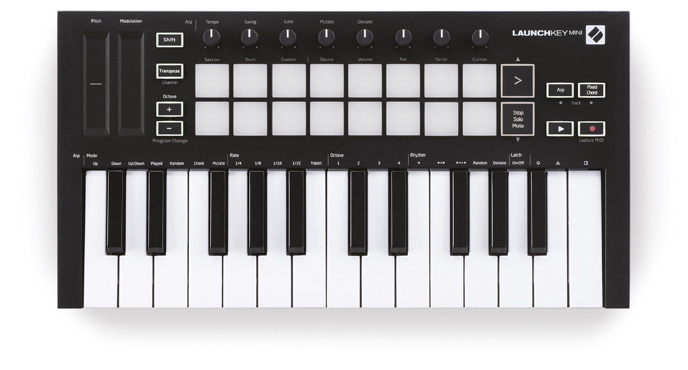
1. Pitch & Modulation touch strips — dải cảm ứng để bẻ pitch (cao độ) hoặc thêm modulation (biến điệu).
2. Nhấn Shift cùng các nút khác để truy cập chức năng phụ.
3. Transpose — transpose (dịch tông) cho phép dịch bàn phím lên/xuống tối đa ±11 nửa cung (semitone). Nhấn Shift + Transpose để chọn MIDI Channel (kênh MIDI) xuất cho bàn phím.
4. Octave + / − — nút dịch quãng tám di chuyển bàn phím lên/xuống qua 7 quãng tám (C-1 đến C5).
5. Các Rotary knob (núm xoay) điều khiển thông số phần cứng, phần mềm hoặc cài đặt trên chính Launchkey.
6. Các Pad rất tốt để trigger (kích hoạt) clip trong Session View của Ableton Live và chơi trống. Giữ Shift sẽ làm sáng hàng pad trên cùng, với pad mode hiện tại sáng nhất. Bạn có thể chuyển giữa 3 pad mode:
- Session — để kích hoạt clip và di chuyển trong Session View.
- Drum — để chơi trống bằng các pad nhạy lực.
- Custom — để chơi một bộ nốt tùy chọn với màu cá nhân hóa. Chỉnh Custom Mode tại
components.novationmusic.com/launchkey-mini-mk3.
7. Nhấn nút Arp để bật Arpeggiator.
8. Nút Fixed Chord: trong khi giữ nút này, nhấn và thả các phím mà bạn muốn đưa vào hợp âm “cố định” đã lưu.
9. Nút này điều khiển playback (phát) của DAW.
10. Nút Record bắt đầu quá trình thu âm (recording) trong DAW.
Mặt sau (Rear View)
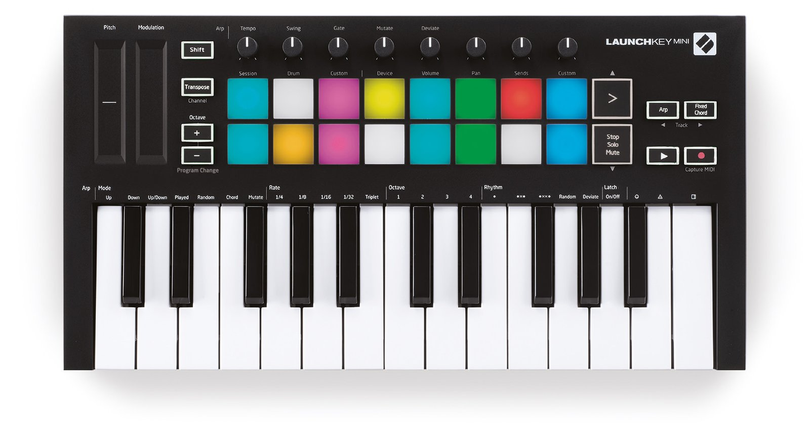
Mặt trên (Top Panel)
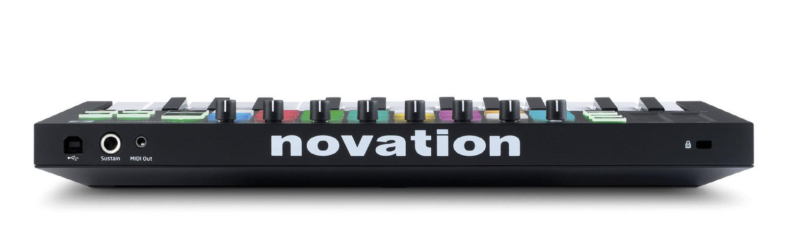
Sử dụng Launchkey Mini [MK3]
Launchkey Mini được thiết kế để hoạt động liền mạch với Ableton Live, mang lại khả năng tích hợp sâu qua các điều khiển sản xuất và biểu diễn mạnh mẽ. Launchkey Mini còn sở hữu một arpeggiator mạnh mẽ (‘Arp’) và chế độ ‘Fixed Chord’ — cả hai đều có thể dùng với Live, các DAW khác, hoặc độc lập với thiết bị ngoại vi của bạn. Ngoài ra, bạn có thể tinh chỉnh Launchkey Mini theo nhu cầu với Custom Mode. Đọc tiếp để hiểu toàn bộ chức năng của Launchkey Mini.
Dùng với Ableton Live 10
Cài đặt (Installation)
Nếu bạn chưa sở hữu Ableton Live 10, hãy đăng ký Launchkey Mini tại novationmusic.com/register để tải và cài đặt bản Ableton Live 10 Lite đi kèm. Nếu bạn chưa từng dùng Ableton Live, chúng tôi khuyến nghị truy cập Easy Start Tool (xem mục “Bắt đầu sử dụng”). Ở đó có các video hướng dẫn cài đặt, các tính năng cơ bản của phần mềm và cách bắt đầu làm nhạc với Launchkey Mini.
Thiết lập (Setup)
Sau khi Ableton Live đã cài, hãy cắm Launchkey Mini vào cổng USB của Mac hoặc PC. Khi mở Live, Launchkey Mini sẽ được tự động phát hiện và vào Session mode.
Nếu bạn nhấn Shift trên Launchkey, đèn pad sẽ giống hình dưới. 3 pad đầu (cam) chọn pad behaviour (hành vi pad), còn 5 pad bên phải (xanh lá) chọn knob behaviour (hành vi núm xoay).
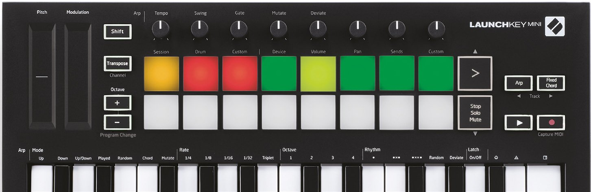
Nếu pad của bạn không giống hình trên, bạn cần cấu hình Control Surface Preferences của Live. Để làm việc này, tìm menu ‘Link/MIDI’ Preferences trong Ableton Live:
- Windows: Options > Preferences > Link/MIDI
- Mac: Live > Preferences > Link/MIDI
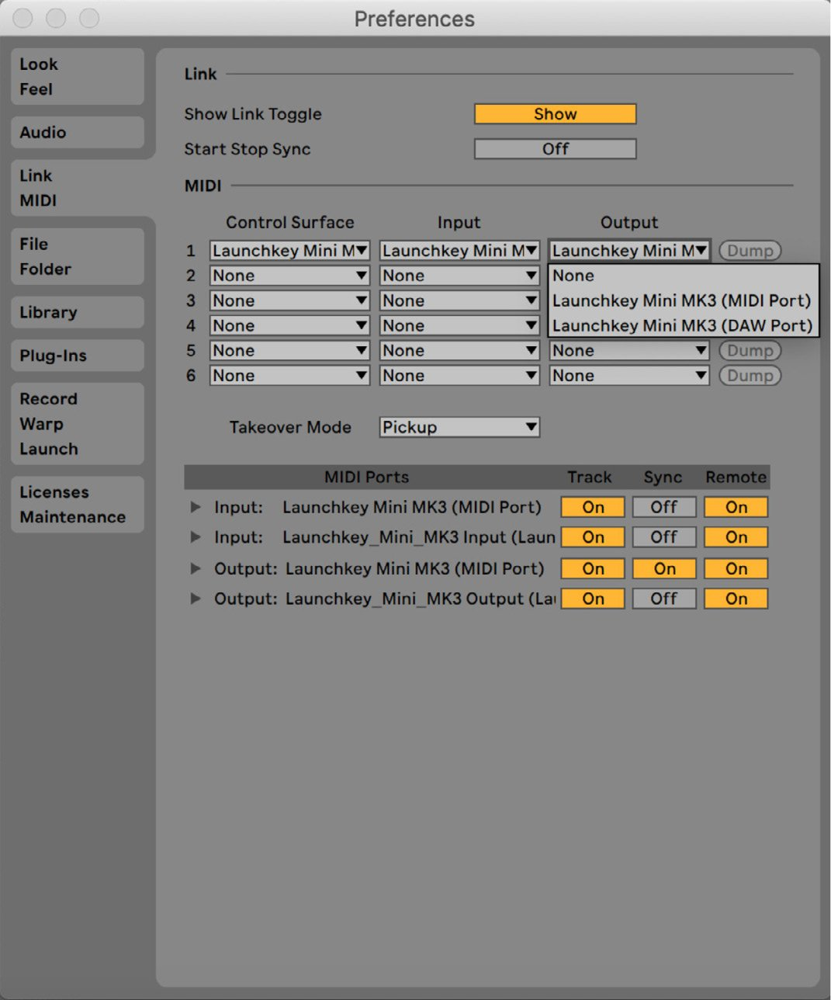
Trong tab Link/MIDI, hãy sao chép các thiết lập như hình. Đầu tiên, chọn Launchkey Mini MK3 trong menu Control Surface. Sau đó, ở Input và Output chọn Launchkey Mini (Launchkey Mini MK3 (DAW Port)) trên Mac hoặc Launchkey Mini MIDI IN2 trên Windows. Cuối cùng, khớp các thiết lập Track, Sync và Remote.
Nếu gặp khó khăn khi dùng Launchkey Mini với Ableton Live, hãy ghé thăm Easy Start Tool để xem video giải thích.
Session Mode
Để vào Session mode trên Launchkey Mini, giữ Shift và nhấn pad Session (pad góc trên bên trái).

Session mode được thiết kế để điều khiển Session View của Ableton Live. Session View là một lưới gồm các clip (đoạn âm thanh), track (kênh dải) và scene (cảnh/hàng clip). Session mode của Launchkey Mini cung cấp góc nhìn 8×2 các clip trong Session View của bạn.
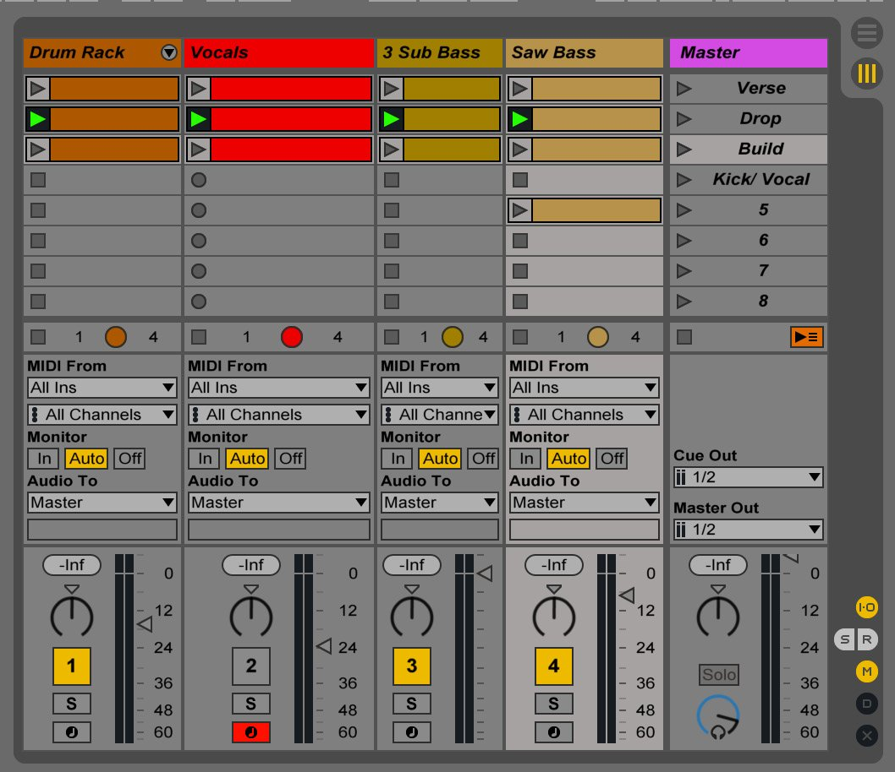
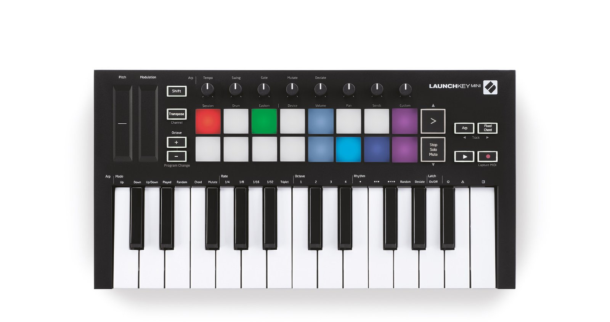
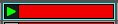
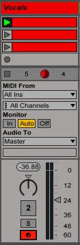
Clip thường là các vòng lặp (loop) chứa nốt MIDI hoặc audio. Track đại diện cho instrument ảo (công cụ ảo) hoặc track audio. MIDI clip đặt trên instrument track sẽ phát trên instrument được gán cho track đó.
Scene là các hàng clip. Chạy một scene sẽ chạy tất cả clip trong hàng đó. Điều này cho phép bạn sắp xếp clip thành các nhóm ngang (xuyên suốt các track) để tạo cấu trúc bài hát, chạy từng scene để tiến qua bài.
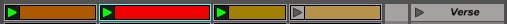
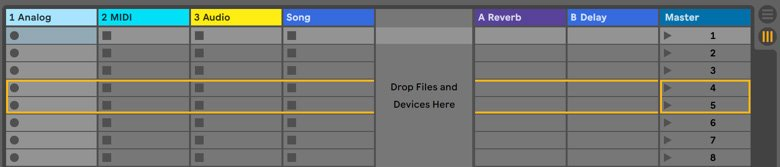

Trong Session mode, các pad đại diện cho lưới clip nằm trong hình chữ nhật màu của Session View trong Ableton Live. Hình dưới cho thấy một hình chữ nhật như vậy (vàng) kéo dài từ track ngoài cùng bên trái đến Master track:
Bất kỳ thay đổi nào về vị trí hoặc màu clip trong Ableton Live đều được phản ánh trong Session mode của Launchkey Mini. Pad không sáng (tối) biểu thị ô clip trống.
Bạn có thể di chuyển trong Session View bằng cách giữ Shift và nhấn 4 nút có mũi tên làm chức năng phụ: ›, Stop Solo Mute, Arp, và Fixed Chord.

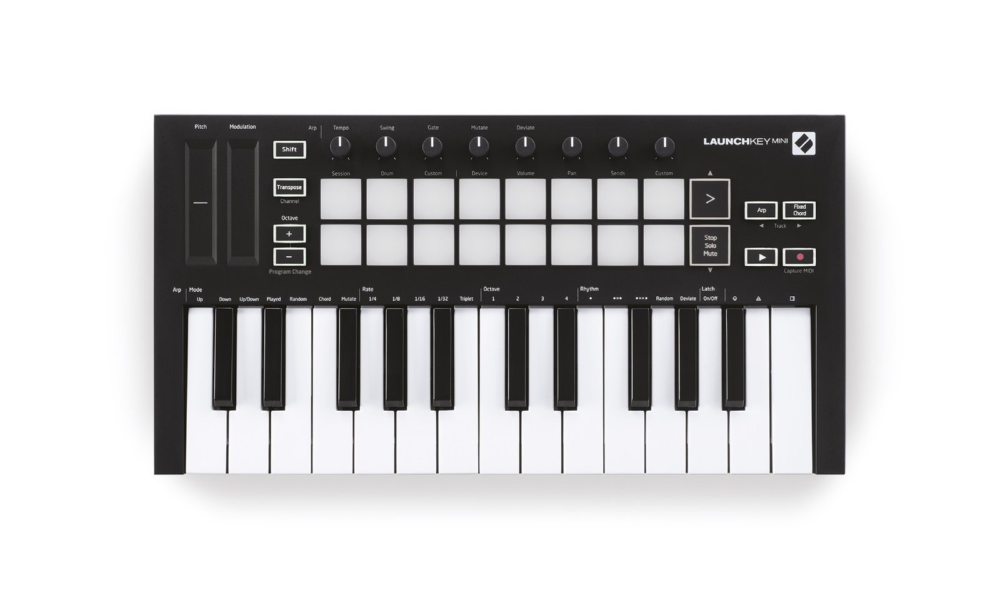

Cụ thể hơn, bạn có thể di chuyển lưới clip đang chọn (bên trong hình chữ nhật màu của Ableton Live) lên/xuống bằng cách giữ Shift và nhấn các nút sau:
- Shift + Scene Launch (›) — di chuyển lưới clip lên một hàng.
- Shift + Stop, Solo, Mute — di chuyển lưới clip xuống một hàng.
Giữ Shift và nhấn Arp (trái) hoặc Fixed Chord (phải) sẽ chọn track bên trái hoặc bên phải kế cận. Việc này cũng tự động arm (chuẩn bị thu) track để sẵn sàng nhận MIDI.
Chạy Clip (Launching Clips)
Nhấn pad sẽ chạy clip ở vị trí tương ứng trong Session View. Pad sẽ nhấp nháy xanh lá để báo clip đang phát. Nhấn lại pad sẽ chạy lại clip, và nhấn pad trống sẽ dừng phát trên track đó.
Tốc độ clip dừng hoặc chạy lại được đặt bởi Global Quantisation chooser (bộ chọn lượng tử hóa toàn cục) của Ableton Live, nằm ở đầu màn hình Live. Mặc định là 1 bar (1 nhịp), nhưng có thể nhanh tới nốt 1/32, hoặc chậm tới 8 bar. Cũng có thể đặt thành ‘None’ để clip phản hồi ngay lập tức.
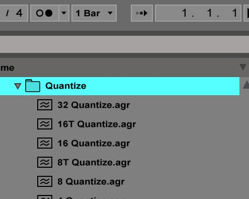
Chạy Scene (Launching Scenes)
Nhấn nút Scene Launch (›) sẽ chạy scene trong Ableton Live. Điều này có nghĩa là tất cả clip trong một hàng có thể cùng bắt đầu, dừng, thu hoặc chạy lại cùng lúc.

Stop, Solo, Mute
Trong Session mode, có thể chuyển đổi chức năng của 8 pad dưới cùng để chúng không còn chạy clip nữa. Việc này thực hiện bằng nút Stop, Solo, Mute.
Nút Stop, Solo, Mute chuyển đổi giữa bốn trạng thái khác nhau, ảnh hưởng đến track theo các cách sau:
- Stop (Đỏ) — ở trạng thái này, nhấn pad sẽ dừng mọi clip trên track tương ứng. Pad đỏ sẽ sáng mờ nếu track không đang phát.
- Solo (Xanh dương) — nhấn pad sẽ solo track tương ứng, nghĩa là chỉ những track có bật Solo mới được nghe. Pad sẽ sáng mờ nếu track không bị solo (tức im lặng) và sẽ sáng xanh dương ổn định nếu bị solo.
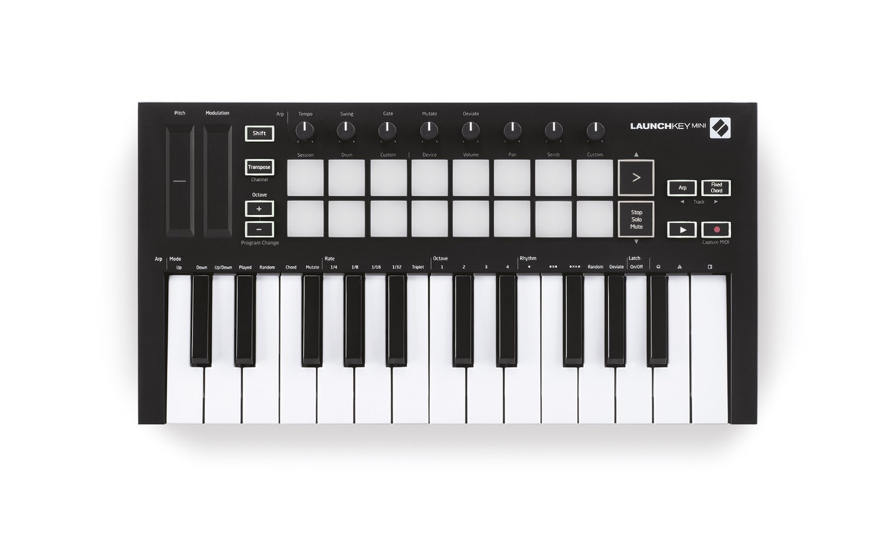
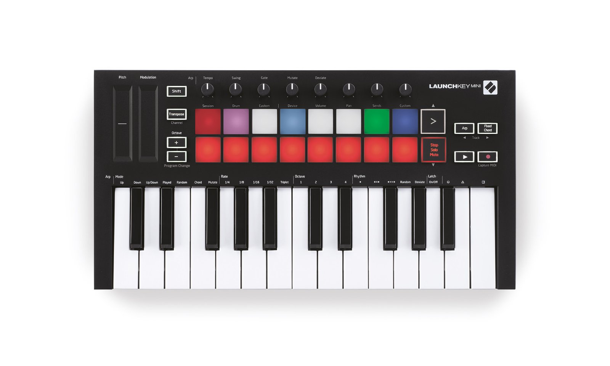
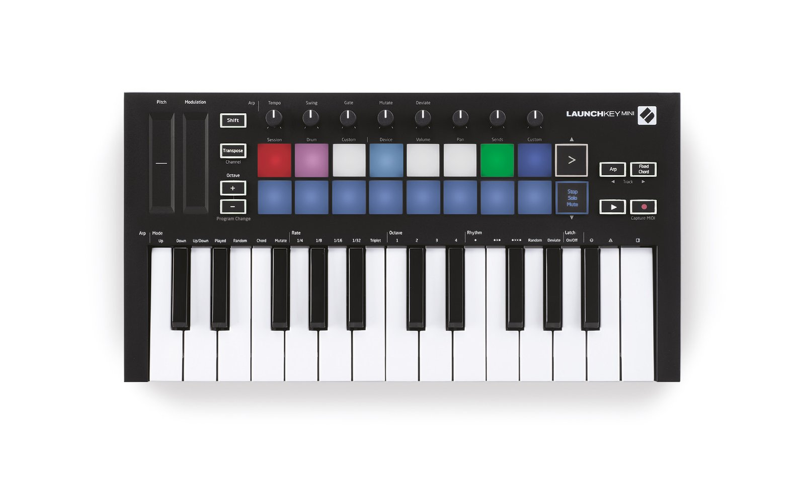
- Mute (Vàng) — nhấn pad sẽ mute track tương ứng. Pad sáng mờ cho track bị mute, còn pad cho track không mute giữ nguyên độ sáng và màu ban đầu.
- Clips (Trắng) — lần nhấn thứ tư (sau khi chuyển qua Stop, Solo và Mute) đưa pad dưới về Session mode mặc định, nơi hàng pad dưới lại đại diện cho clip.
Record / Capture MIDI
Nhấn nút này sẽ kích hoạt Session Record. Việc này cho phép bạn thu những gì đang chơi vào clip mới cũng như overdub (ghi đè) các clip hiện có.
Giữ Shift và nhấn Record sẽ kích hoạt chức năng Capture MIDI. Việc này cho phép bạn thu hồi (retrospectively) mọi nốt MIDI vừa chơi trên track đã arm. Nghĩa là nếu bạn không đang thu, nhưng chơi một đoạn nghe hay, bạn có thể dùng Capture MIDI để đưa thẳng nó vào một clip.
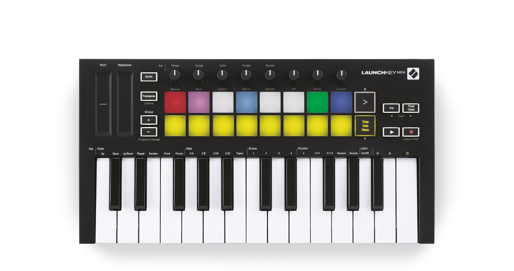
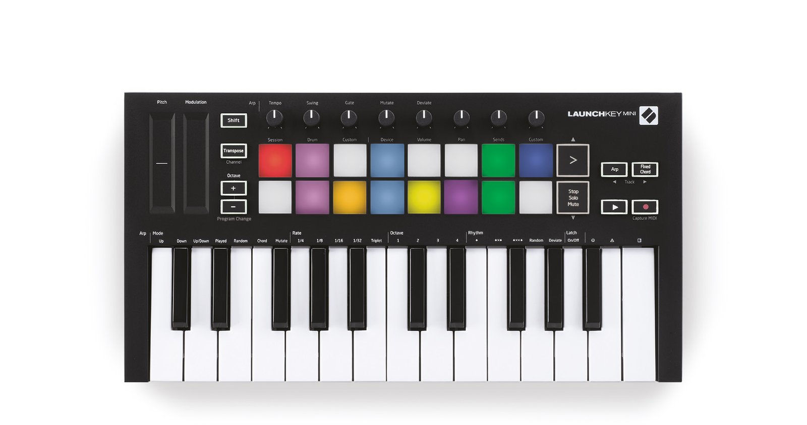
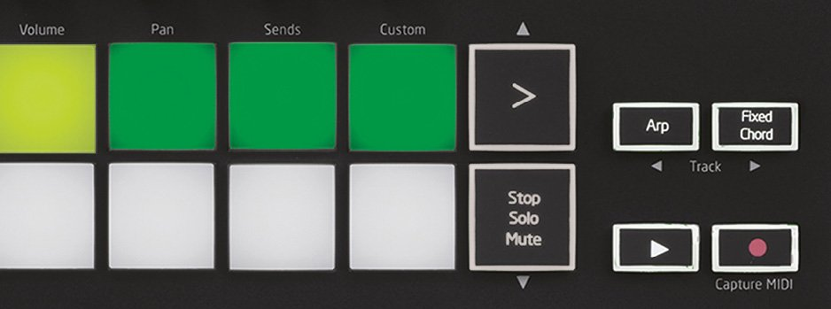
Chơi và thu trống (Playing & Recording Drums)
Drum mode biến các pad của Launchkey Mini thành pad trống nhạy lực.
Giữ Shift và nhấn pad Drum (thứ 2 từ trên cùng bên trái) để vào chế độ này. Nếu một Drum Rack (instrument MIDI của Ableton chứa bộ trống) được nạp vào track Live đang chọn và Launchkey Mini đang ở Drum mode, các pad sẽ sáng màu của track. Các pad này sẽ chơi các pad Drum Rack đang hiển thị trên màn hình, chuyển sang xanh lá khi được chơi, và đỏ nếu track đang thu.
Giữ Shift và nhấn nút › hoặc Stop, Solo, Mute để cuộn lên/xuống bank 128 pad của Drum Rack.
Khi dùng Drum Rack của Ableton, Drum mode — ngoài việc kích hoạt âm thanh — còn chọn pad Drum Rack tương ứng. Nghĩa là khi thả, pad Drum Rack chơi cuối cùng sẽ chuyển sang xám và Ableton Live hiển thị pad Drum Rack đang chọn trên màn hình.
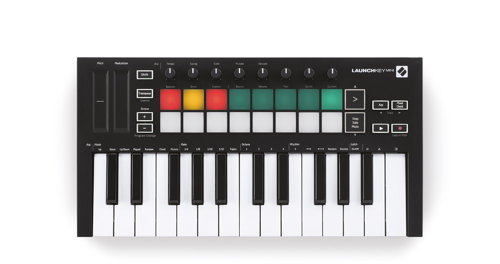
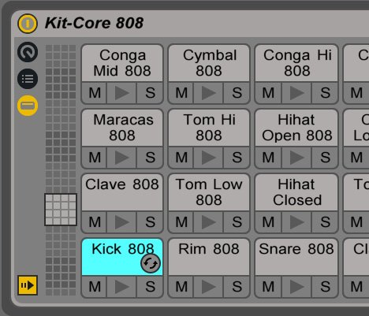
Dùng Ableton Live Devices
Device mode cho phép bạn điều khiển ‘device’ (Instrument và Effect của Ableton hoặc bên thứ 3) đang chọn trên một track Live. Giữ Shift và nhấn pad Device (thứ 4 từ trên cùng bên trái) để dùng chế độ này.
Trong chế độ này, các núm điều khiển 8 thông số đầu tiên của device đang chọn. Điều này đặc biệt hữu ích để điều khiển 8 núm ‘macro’ của Live, có sẵn trên Instrument và Effect Rack.
Hình trên cho thấy một preset Impulse tên ‘Percussion 1’. Ở đây, các núm của Launchkey Mini điều khiển âm lượng sample, sample start và ‘stretch’, cũng như lượng delay và reverb.

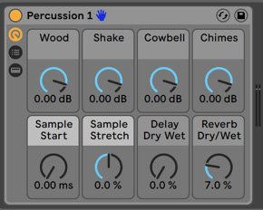
Dùng Mixer của Ableton Live
8 núm của Launchkey Mini (trong khung đỏ ở hình trên) cho bạn điều khiển trực tiếp mixer của Live. Giữ Shift, rồi nhấn pad Volume, Pan hoặc Sends (trong khung xanh ở hình trên) để điều khiển các thông số tương ứng bằng các núm.
- Volume — chế độ này cho phép điều khiển âm lượng của 8 track đang chọn bên trong hình chữ nhật màu của Live. Giữ Shift và nhấn pad Volume (thứ 4 từ trên cùng bên phải) để chọn chế độ này.
- Pan — chế độ này cho phép pan (cân trái/phải) 8 track đang chọn. Giữ Shift và nhấn pad Pan (thứ 3 từ trên cùng bên phải).
- Sends — chế độ này cho phép điều khiển mức send của track trong Ableton Live. Giữ Shift và nhấn pad Sends (thứ 2 từ trên cùng bên phải).
Khi ở Sends mode, hai pad tím trên hàng dưới sẽ chuyển giữa Send A hoặc Send B. Pad tím trái chọn Send A, pad tím phải chọn Send B.
Mẹo: Gửi audio tới return track là cách tuyệt vời để dùng ít hiệu ứng audio hơn. Ví dụ, thay vì đặt cùng một reverb trên nhiều track, bạn có thể đặt một reverb trên return track và gửi nhiều track tới nó.

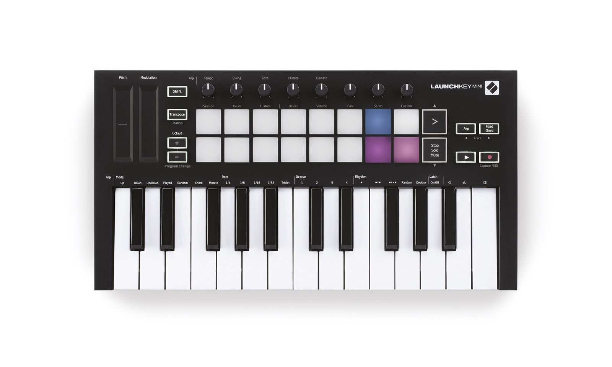
Arp (Arpeggiator)
Nhấn nút Arp ở bên phải Launchkey sẽ bật Arpeggiator. Sau khi bật Arp, Launchkey sẽ lấy hợp âm của bạn và tạo ra một arpeggio — tức chơi từng nốt của hợp âm lần lượt. Arpeggiator sẽ chạy miễn là phím được giữ, ở giá trị nhịp đã đặt bởi Arp Rate.
Arp của Launchkey là cách tuyệt vời để dễ dàng tạo ra các giai điệu và vòng hợp âm thú vị.
Các núm xoay của Arpeggiator
Khi bạn giữ nút Arp, các núm xoay có thể biến đổi arpeggio của bạn.
- Tempo — núm này tăng/giảm tốc độ arpeggio so với Arp Rate. Khi Launchkey Mini dùng làm controller độc lập, núm này dao động từ 40 BPM đến 240 BPM. Tuy nhiên, khi đồng bộ với Ableton Live, núm này sẽ không có tác dụng.
- Swing — núm này đặt lượng trễ của mỗi nốt cách một, tạo ra nhịp điệu swung. Để thay Swing, giữ nút Arp rồi xoay núm có nhãn Swing. Mặc định (vị trí giữa) swing là 50% (không swing), với hai cực 80% (swing mạnh) và 20% (swing âm). Swing âm nghĩa là mỗi nốt cách một bị rút ngắn (rushed) thay vì bị trễ.
- Gate — chỉnh núm này sẽ tạo nốt MIDI dài hơn hoặc ngắn hơn, cho ra arpeggio ‘staccato’ (ngắn, dứt khoát) hoặc arpeggio ‘legato’ (mượt, liền). Núm chạy từ 1% đến 200% khoảng trống giữa các nốt. Với nốt có áp dụng swing, cả hai nốt giữ cùng độ dài gate.
- Mutate — sau khi chọn Mutate làm Arp Mode, giữ nút Arp và xoay núm này để thêm nốt ngẫu nhiên vào arpeggio. Một ‘đột biến’ mới xảy ra với mỗi vòng xoay. Khi bạn ngừng xoay, các nốt được chốt và lặp lại vô thời.
- Deviate — sau khi chọn Deviate làm Arp Rhythm, xoay núm này để tạo biến thể nhịp. Với mỗi vòng xoay, bạn sẽ tạo ra một dải nghỉ (rest) khác nhau.
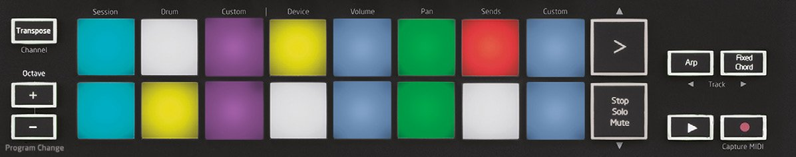
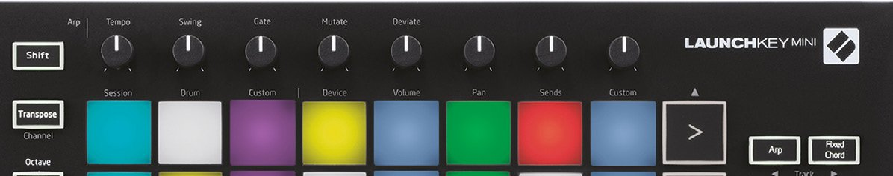
Arp Modes (Chế độ Arp)
Sau khi bật Arp, bạn sẽ ở 1 trong 7 Arpeggiator Mode, mỗi mode cho ra arpeggio với thứ tự nốt khác nhau. Để đổi Arp Mode, giữ nút Arp rồi nhấn phím tương ứng với mode mong muốn. Sau khi nhấn phím, bạn sẽ thấy pad bên trên phản ánh thay đổi.
- Up — các nốt được chơi theo thứ tự tăng dần (cao dần). Nếu thêm nốt, số nốt trong chuỗi sẽ tăng nhưng vẫn theo thứ tự tăng dần. Ví dụ, bạn có thể bắt đầu bằng nốt E3, rồi nhanh chóng thêm C3 và G3. Arpeggio kết quả sẽ là C3, E3, G3.
- Down — tương tự Up nhưng các nốt chơi theo thứ tự giảm dần (VD: G3, E3, C3).
- Up/Down — mode này bắt đầu chơi nốt theo thứ tự tăng dần. Sau khi đạt nốt cao nhất, các nốt giảm dần về nốt thấp nhất, nốt này chơi một lần trước khi arpeggio tăng lại và dừng trước khi chạm nốt thấp nhất. Nghĩa là khi mẫu lặp lại, nốt thấp nhất chỉ chơi một lần.
- Played — các nốt được lặp lại theo đúng thứ tự đã được chơi.
- Random — thứ tự nốt hợp âm được xáo trộn ngẫu nhiên vô thời.
- Chord — tất cả nốt được phát cùng lúc ở mỗi bước nhịp (xem Arp Rate). Việc này giúp chơi hợp âm nhanh rất dễ.
- Mutate — Mutate tự tạo nốt và thêm vào arpeggio khi xoay núm dưới nhãn ‘Mutation’. Xoay núm để biến đổi arpeggio theo cách bất ngờ. Núm đi từ ‘nhẹ’ (trái) đến ‘điên’ (phải) — 25% trái sẽ thêm biến thể tinh tế, còn 99% phải cho kết quả rất bất ngờ. Khi hài lòng với âm thanh, ngừng xoay núm. Các nốt khi đó được chốt và lặp lại vô thời.
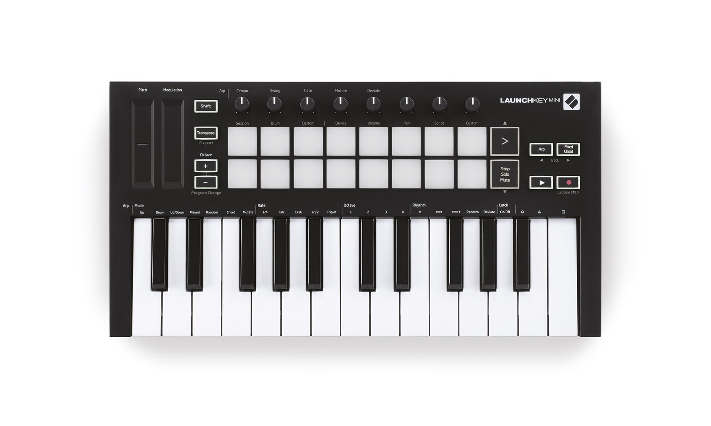
Arp Rates (Tốc độ Arp)
Các tùy chọn này xác định tốc độ của các nốt arpeggio. Vì mỗi nốt chơi ngay sau khi nốt trước kết thúc, rate ngắn hơn (VD 1/32) sẽ chơi arpeggio nhanh hơn rate dài hơn (VD 1/4).
Các tùy chọn Rate là giá trị nốt nhạc phổ biến: nốt đen (¼), nốt móc đơn (1/8), nốt móc kép (1/16) và nốt móc ba (1/32). Để đổi Arp Rate, giữ nút Arp rồi nhấn phím dưới 1/4, 1/8, 1/16 hoặc 1/32.
Ngoài ra, bạn có thể bật/tắt nhịp triplet (nốt ba) cho từng giá trị trên bằng cách nhấn phím dưới ‘Triplet’. Việc này biến các nốt arpeggio thành triplet của nốt đen, móc đơn, móc kép và móc ba.
Arp Octaves (Số quãng tám)
4 phím này xác định arpeggio sẽ lặp lại trong bao nhiêu quãng tám. Để đổi, giữ nút Arp rồi nhấn phím dưới 1, 2, 3 hoặc 4. Chọn quãng tám cao hơn 1 sẽ lặp arpeggio ở các quãng tám cao hơn. Ví dụ, arpeggio C3, E3, G3 ở 1 quãng tám sẽ thành C3, E3, G3, C4, E4, G4 khi đặt 2 quãng tám.
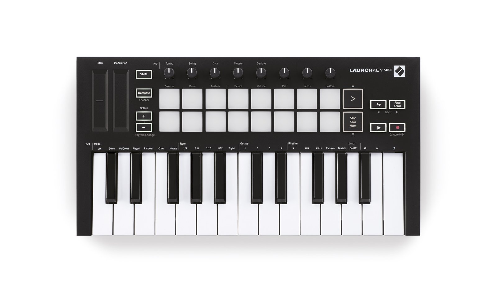
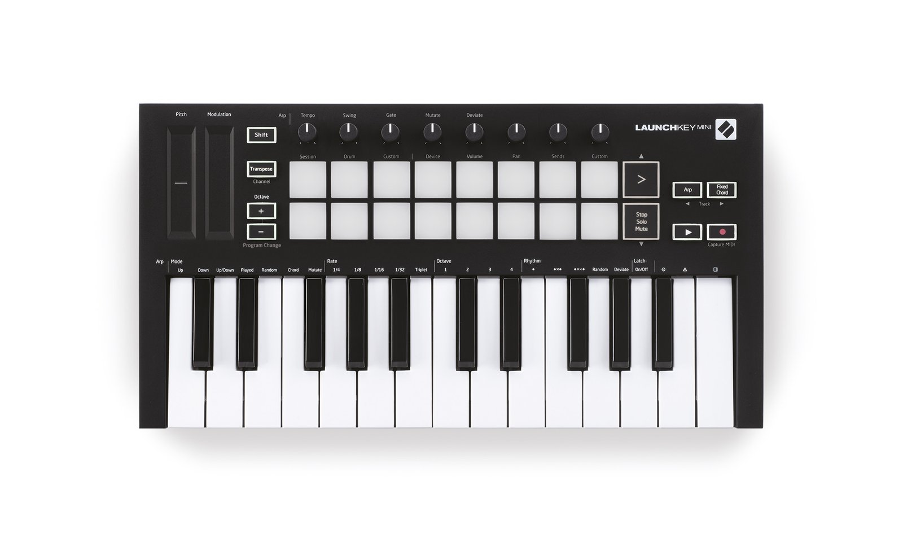
Arp Rhythms (Nhịp Arp)
Arp Rhythms thêm các nốt nghỉ (rest — bước im lặng) vào mẫu arpeggio, cho phép nhiều biến thể hơn. Giữ Arp rồi nhấn một trong các tùy chọn sau, chúng sẽ chuyển pad sang vàng.
- Dots — ba tùy chọn này là các mẫu nhịp.
- O — thiết lập Arpeggiator bình thường, đặt một nốt ở mỗi phân chia của Arp rate.
- OXO (nốt – nghỉ – nốt) — nhịp này thêm một nghỉ giữa mỗi cặp nốt.
- OXXO (nốt – nghỉ – nghỉ – nốt) — mẫu này thêm hai nghỉ giữa mỗi cặp nốt.
- Random — tạo các nghỉ ngẫu nhiên với độ dài ngẫu nhiên. Mỗi bước có 50% khả năng là nốt hoặc nghỉ. Trong trường hợp là nghỉ, nốt được dời sang bước kế tiếp chứ không bị bỏ qua.
- Deviate — đây là Arp Rhythm độc đáo nhất, tạo nhiều biến thể nốt. Nó dùng núm Deviate, mỗi vòng xoay tạo một dải nghỉ khác nhau.
Latch
Latch (khóa giữ) cho phép bạn dùng Arpeggiator mà không cần giữ phím. Mọi nốt bạn nhấn và thả cùng lúc sẽ tạo một mẫu arpeggio mới mà arpeggiator ‘khóa’ vào. Arpeggiator sau đó tiếp tục phát như thể bạn chưa bao giờ thả phím. Khi bạn nhấn phím mới, arpeggio trước bị xóa và một arpeggio mới hình thành.
Để bật Latch, giữ nút Arp rồi nhấn phím dưới ‘Latch’. Pad dưới Volume sẽ chuyển từ đỏ sang xanh lá nhạt khi bạn bật Latch, và bạn có thể thấy pad này khi đang chỉnh Arp Mode, Rate, Octave hoặc Rhythm.

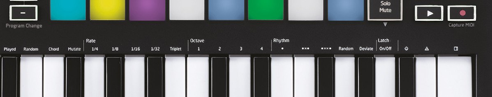
Arp Pads
Các pad của Launchkey Mini giúp xác nhận trực quan trạng thái Arp hiện tại. Khi nút Arp được giữ, các pad sẽ sáng các màu khác nhau, biểu thị các thiết lập Arp: tím (Arp Modes), đỏ (Arp Rates), xanh dương (Arp Octaves), vàng (Arp Rhythms), và đỏ/xanh lá nhạt (Latch).
Hàng pad trên cùng chọn nhóm Arp: Arp Modes, Arp Rates, Arp Octaves, Arp Rhythms và Latch (Bật/Tắt). Hàng pad dưới cùng chọn các tùy chọn khác nhau trong nhóm đã chọn (từ hàng trên).
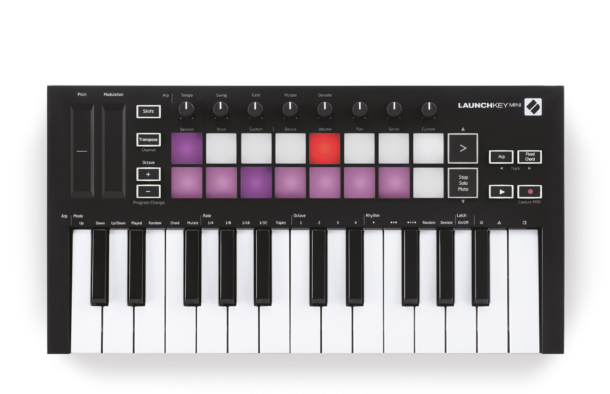
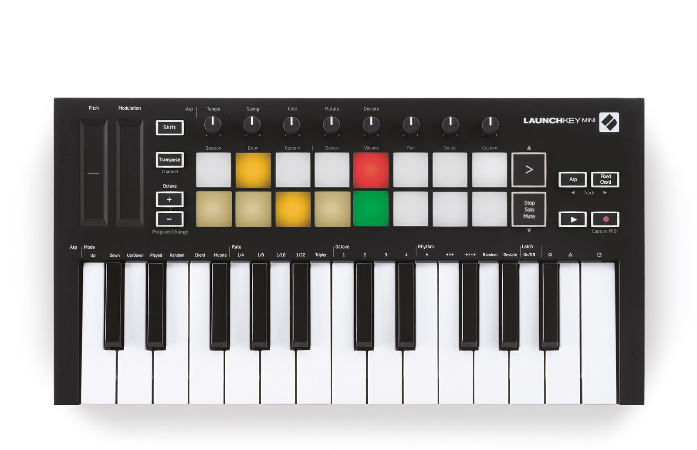
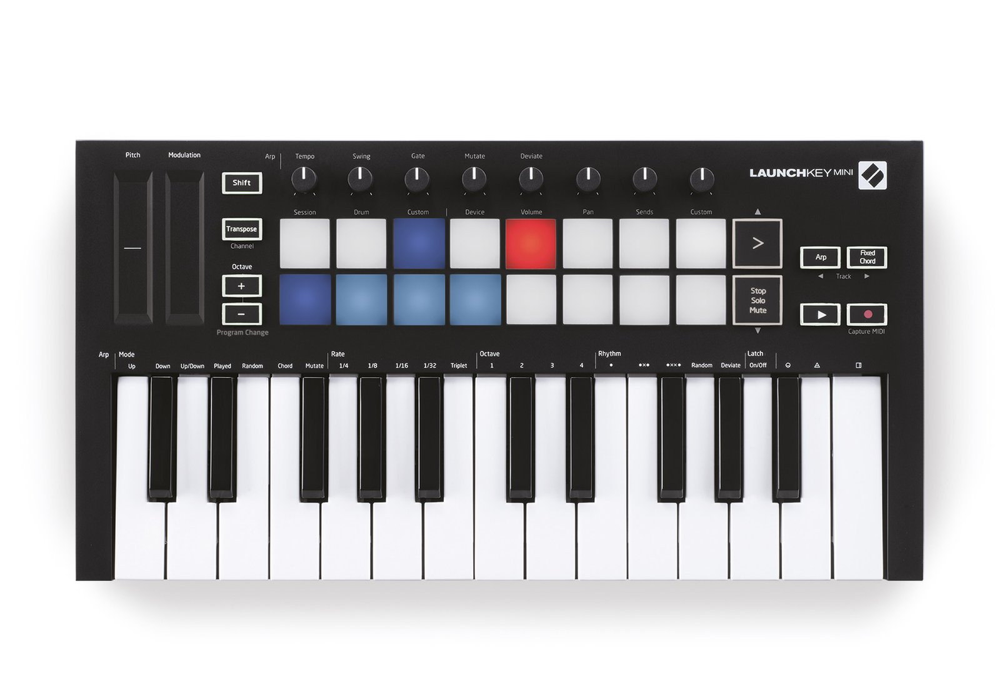
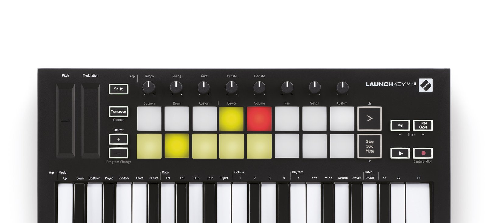
Fixed Chord
Fixed Chord cho phép bạn chơi một hình hợp âm rồi dịch nó bằng cách nhấn các phím khác.
Để đặt một hợp âm, giữ nút Fixed Chord. Sau đó, trong khi vẫn giữ nút, nhấn và thả các phím mà bạn muốn đưa vào hợp âm. Hợp âm lúc này được lưu.
Lưu ý: nốt đầu tiên bạn nhập vào hợp âm được coi là ‘nốt gốc’ (root note) của hợp âm, kể cả khi bạn sau đó thêm các nốt thấp hơn nốt đầu tiên, như trong ví dụ dưới.
Các bước sau minh họa cách dùng Fixed Chord:
- Nhấn và giữ nút Fixed Chord.
- Nhấn và thả C, rồi E, và cuối cùng G (một hợp âm Đô trưởng / C Major). Thiết bị lưu đây là ‘hợp âm cố định’.
- Thả nút Fixed Chord.
- Giờ đây các hợp âm trưởng sẽ vang lên trên bất kỳ phím bạn nhấn. Ví dụ, bạn có thể nhấn F để nghe hợp âm F Major (như hình dưới), hoặc Ab để nghe hợp âm Ab Major, v.v.
Bất cứ khi nào bạn vào thiết lập Fixed Chord, hợp âm đã lưu sẽ bị xóa và phải nhập hợp âm mới để Fixed Chord hoạt động lại.
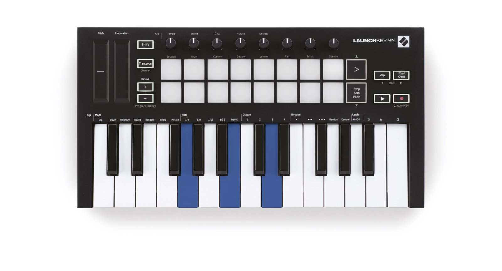
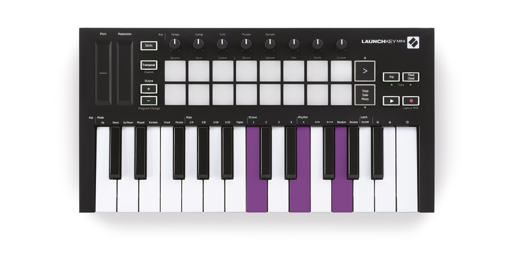
Strum Mode
Strum mode (chế độ gảy) lấy cảm hứng từ việc chơi nhạc cụ dây như guitar, harp và cả kiểu điều khiển “Omnichord” phổ biến. Nó dùng modulation wheel để gảy arpeggio một cách có kiểm soát và biểu diễn được. Bạn có thể coi Strum mode như modulation wheel là những “dây ảo” bạn có thể gảy.
Để vào Strum mode, trong trang Arp Controls, nhấn pad thứ sáu ở hàng trên. Pad này bật/tắt Strum mode. Khi bật, pad sáng xanh lá; khi tắt, pad sáng đỏ mờ. Bạn cũng có thể truy cập Strum mode bằng cách giữ nút [Shift] và nhấn phím có nhãn [Ø] trên bàn phím.
Trong Strum mode, bạn có thể giữ nốt trên bàn phím và dùng Modulation strip để chơi các dây ảo trên hợp âm arpeggio. Trong Strum mode bạn vẫn có thể truy cập phần lớn hành vi của arpeggiator, ngoại trừ trang Rhythm sẽ không hoạt động khi Strum mode đang bật.
Arp Controls trong Strum Mode
- Mode — cho phép đặt hướng/thứ tự nốt trên dải cảm ứng.
- Up — nâng Mod Wheel sẽ chơi nốt theo thứ tự tăng dần.
- Down — nâng Mod Wheel sẽ chơi nốt theo thứ tự giảm dần.
- Up/Down — nâng Mod Wheel sẽ chơi nốt tăng rồi giảm.
- Played — nâng Mod Wheel sẽ chơi nốt theo thứ tự đã nhập vào arpeggiator.
- Random — nâng Mod Wheel sẽ chơi nốt theo thứ tự ngẫu nhiên.
- Chord — nâng Mod Wheel sẽ chơi toàn hợp âm và áp dụng tối đa bốn phép đảo (inversion) trên hình hợp âm.
- Mutate — nâng Mod Wheel sẽ tuân theo thiết lập núm Mutate của Arp.
- Rate — cho phép tăng thời lượng / thời gian “ring out” (vang) của từng nốt gảy. ¼ cho thời lượng nốt dài nhất, 1/32 cho ngắn nhất. Bạn có thể thêm điều khiển tinh chỉnh thời lượng nốt bằng núm “Gate”.
- Octave — bạn có thể thêm quãng tám cho Strum mode, thực tế cho phạm vi nốt / dây ảo rộng hơn nhiều.
- Latch — cho phép khóa arpeggiator theo cách thông thường để nốt trên bàn phím không cần phải giữ.
Latching Pages
Có thể latch (khóa mở) các trang điều khiển để truy cập dễ hơn các điều khiển của các mode đó. Tính năng hữu ích này cho phép truy cập bằng một tay các trang điều khiển gồm:
- Arp controls
- Transpose setting
- Fixed Chord
- Các chức năng Shift như chọn núm và MIDI Channel.
Control Pages
Để latch một trang điều khiển, hãy nhấn đúp trang đó. Để mở Arp controls, nhấn đúp [Arp]; Arp controls mở và vẫn truy cập được trên pad và núm. [Arp] sẽ nhấp nháy để báo đang mở. Để trở về hoạt động bình thường hoặc thoát Arp Controls, nhấn [Arp] hoặc [Shift].
Transpose Controls
Để latch Transpose controls, nhấn đúp [Transpose]. Transpose controls mở và vẫn truy cập được trên pad. [Transpose] sẽ nhấp nháy báo đang mở. Để thoát, nhấn [Transpose] hoặc [Shift].
Shift Controls
Để latch Shift controls, nhấn đúp nút [Shift]. Shift controls mở và vẫn truy cập được trên pad. Nút Shift giữ sáng để báo đang hoạt động. Để thoát, nhấn [Shift]. Trong khi Shift controls đang latch, bạn cũng có thể latch thêm MIDI channel controls: nhấn đúp [Transpose]. Để thoát MIDI channel controls, nhấn [Transpose] hoặc [Shift].
Fixed Chords
Bạn cũng có thể tạo Fixed Chord bằng cùng hành vi latch như trên. Để latch Fixed Chord, nhấn đúp [Fixed Chord]. Nó sẽ nhấp nháy báo đang ở chế độ nhập nốt hợp âm. Trong khi [Fixed Chord] nhấp nháy, bạn có thể thêm các nốt mong muốn vào hợp âm bằng cách chơi chúng trên bàn phím. Khi xây xong hợp âm, nhấn [Fixed Chord] để trở về hành vi bình thường. Nút ngừng nhấp nháy nhưng vẫn sáng để báo Fixed Chord mode đang hoạt động; bạn có thể bật/tắt theo cách thường bằng một lần nhấn.
Custom Modes & Components
Launchkey Mini có thể đóng vai trò bộ điều khiển MIDI đa năng cho nhiều phần mềm và phần cứng sản xuất âm nhạc. Ngoài các thông điệp Note On/Note Off gửi từ 25 phím, mỗi núm và pad đều truyền một thông điệp MIDI có thể tùy chỉnh bằng Novation Components — trình quản lý trực tuyến cho các sản phẩm Novation. Việc này cho phép bạn cấu hình thiết bị để dùng các thông điệp này theo ý muốn.
Thiết lập Custom Modes
Giữ Shift và nhấn pad Custom (thứ 3 từ trên cùng bên trái, để tùy chỉnh hành vi pad), hoặc pad Custom kia (trên cùng bên phải, để tùy chỉnh hành vi núm) để truy cập chế độ này.
Custom Modes có thể được tạo và chỉnh sửa bằng Novation Components — trình trực tuyến cho mọi sản phẩm Novation. Bạn có thể sao lưu mọi Custom Mode đã tạo tại đây. Chúng tôi cũng có sẵn một số mẫu Custom Mode để bạn tải về và khám phá trên Components.
Để truy cập Components, vào components.novationmusic.com bằng trình duyệt hỗ trợ WebMIDI (khuyến nghị Google Chrome hoặc Opera). Ngoài ra, tải phiên bản độc lập của Components từ trang Tài khoản Novation của bạn.
- Pad — trong Pad Custom Mode, lưới pad 8×2 sẽ gửi thông điệp Note. Nốt mỗi pad gửi, cũng như màu Bật/Tắt của mỗi pad, có thể chỉnh trong Components.
- Knob — trong Knob Custom Mode, các núm sẽ gửi thông điệp CC (Continuous Controller — bộ điều khiển liên tục). CC mỗi núm gửi có thể chỉnh trong Novation Components. Việc này hữu ích để điều khiển phần cứng có giá trị CC cố định cho mỗi điều khiển.
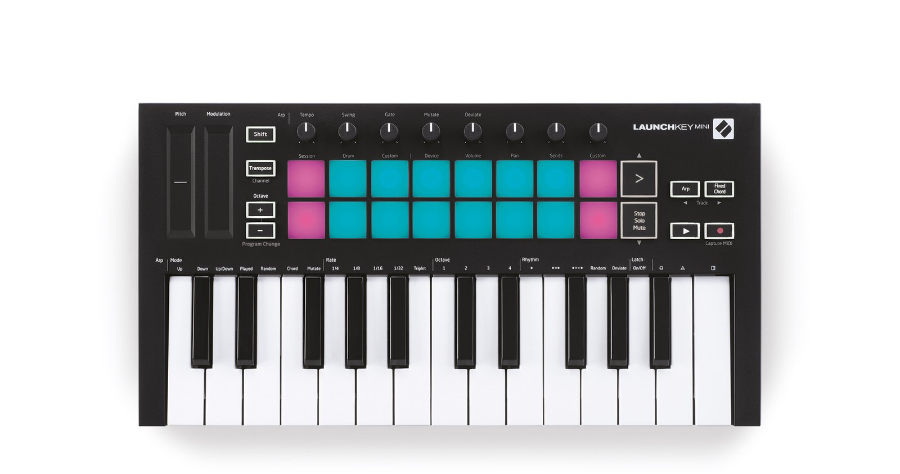
Dùng với Logic Pro X
Launchkey Mini [MK3] có thể làm bộ điều khiển cho Logic Pro X của Apple. Nhiều khía cạnh của Launchkey Mini hoạt động theo Tổng quan phần cứng ở phần đầu. Hành vi mô tả trong phần Arp và Fixed Chord vẫn giữ nguyên trong Logic Pro X.
Thiết lập (Setup)
Trước khi mở Logic, bạn cần cài ‘Logic Script Installer’ từ trang tải Launchkey Mini [Mk3]: novationmusic.com/support/downloads.
Sau khi chạy Logic Script Installer, kết nối Launchkey Mini [Mk3] với máy tính qua USB. Logic sẽ phát hiện Launchkey Mini. Nếu không, bạn cần phát hiện thủ công: vào Logic Pro X > Control Surfaces > Setup.
Trong cửa sổ Setup, nhấp menu ‘New’ rồi ‘Install...’ như các ảnh chụp dưới. Việc này sẽ mở cửa sổ ‘Install’. Cuộn tới Novation Launchkey Mini MK3 và nhấp ‘Add’. Đặt Output Port và Input Port thành ‘Launchkey Mini Mk3 DAW Port’.
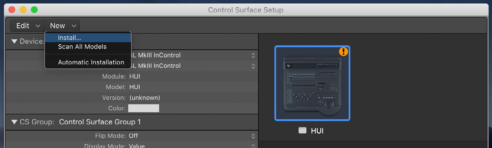
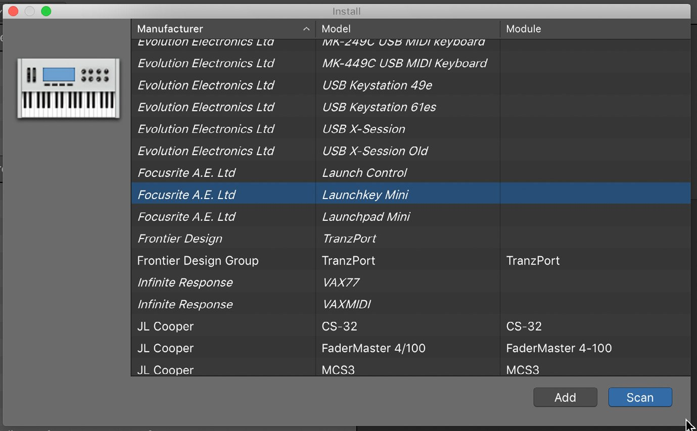
Session Mode
Nhấn Shift rồi đến pad Session để vào Session mode cho Logic Pro X. Ở đây, mặc định các pad đại diện cho track 1 đến 8. Nếu một track không chứa thông tin audio hoặc MIDI, pad tương ứng sẽ không sáng.
Theo mặc định, hàng pad trên (đỏ) bật/tắt track arm, sáng rực khi đã arm. Hàng pad dưới (xanh dương) bật/tắt track mute, cũng sáng rực khi track bị mute.
Nhấn nút Stop, Solo, Mute để chuyển hàng pad dưới sang solo (vàng). Ở trạng thái này, nhấn pad sẽ bật/tắt track solo và pad sẽ sáng hơn.
Nhấn nút Record để bắt đầu transport của Logic và thu lên một track đã arm.
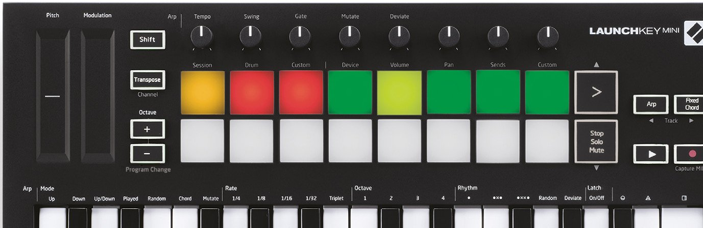
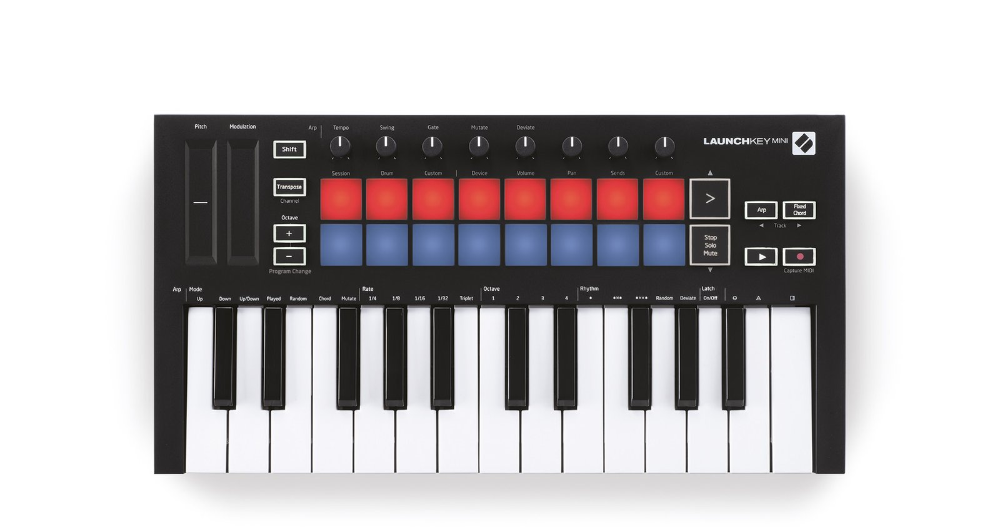
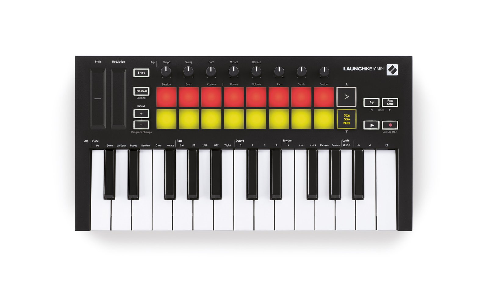
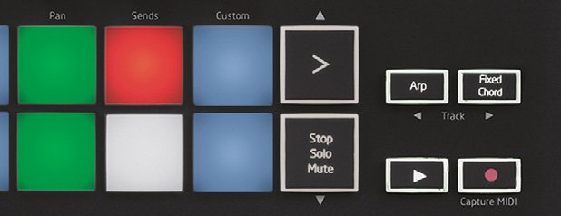
Navigation (Điều hướng)
Giữ Shift và nhấn Arp hoặc Fixed Chord sẽ chọn track trước hoặc sau track hiện tại, tương ứng. Việc này cũng tự động arm track mới chọn.
Drum Mode
Giữ Shift và nhấn pad Drum (thứ 2 từ trên cùng bên trái) để vào Drum mode. Việc này cho phép bạn dùng pad nhạy lực của Launchkey Mini cho instrument trống của Logic.
Dùng Devices của Logic
Device mode cho phép bạn điều khiển ‘Smart Controls’ của track đang chọn bằng các núm của Launchkey Mini. Giữ Shift và nhấn pad Device (trên cùng bên phải) để dùng chế độ này.


Dùng Mixer Controls của Logic
8 núm của Launchkey Mini (trong khung đỏ) cho bạn điều khiển mixer của Logic Pro X. Giữ Shift, rồi nhấn pad Volume, Pan hoặc Sends (trong khung xanh) để điều khiển các thông số tương ứng bằng núm.
- Volume và Pan — hai mode này cho phép điều khiển Volume và Pan của 8 track đang chọn. Giữ Shift và nhấn pad Volume hoặc Pan (pad thứ 5 và 6 từ trên cùng bên trái) để chuyển giữa hai mode.
- Sends — mode này cho phép điều khiển mức send của track Logic. Giữ Shift và nhấn pad Sends (thứ 2 từ trên cùng bên phải).
Khi ở Sends mode, hai pad xanh dương trên hàng dưới sẽ chuyển giữa Send A và Send B. Pad xanh trái chọn Send A, pad xanh phải chọn Send B.


Dùng với Reason 10
Thiết lập (Setup)
Sau khi mở Reason 10 và kết nối Launchkey Mini qua USB, tìm Preferences của Reason tại: Reason > Preferences.
Trong Reason’s Preferences, nhấp Control Surfaces và chọn ‘Auto-detect Surfaces’. Reason sẽ tìm thấy Launchkey Mini [MK3]. Chọn nó và đảm bảo ‘Use with Reason’ được tích.
Rotary Knobs
Với một instrument Reason đang chọn, 8 núm của Launchkey Mini sẽ tự động điều khiển các thông số hữu ích. Tất nhiên, các núm điều khiển thông số nào tùy thuộc vào instrument. Với Kong Drum Designer chẳng hạn, các núm của Launchkey Mini (từ trái sang phải) ánh xạ tới Pitch, Decay, Bus FX, Aux 1, Aux 2, Tone, Pan và Level.
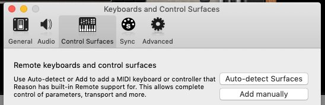
Navigation
Giữ Shift và nhấn Arp hoặc Fixed Chord sẽ chọn track dưới hoặc trên track hiện tại, tương ứng. Việc này cũng tự động arm track Reason mới chọn.
Preset Browsing (Duyệt preset)
Nhấn nút › và Stop, Solo, Mute để cuộn qua preset trên instrument Reason. Shift + › chuyển sang preset kế tiếp, Shift + Stop, Solo, Mute chuyển về preset trước.
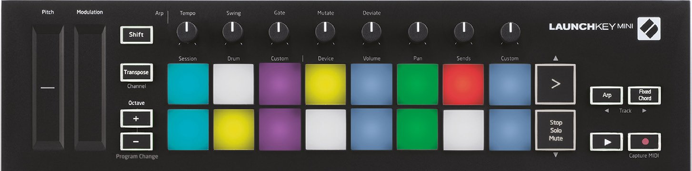
Dùng với HUI (Pro Tools, Cubase)
‘HUI’ (Human User Interface Protocol — giao thức giao diện người dùng) cho phép Launchkey Mini hoạt động như một thiết bị Mackie HUI, và do đó làm việc với các DAW hỗ trợ HUI. Các DAW hỗ trợ HUI gồm Cubase và Nuendo của Steinberg, Pro Tools của Avid, và Digital Performer của MOTU, cùng những thứ khác. Phần lớn khía cạnh của Launchkey Mini hoạt động theo Tổng quan phần cứng ở phần đầu. Tương tự, hành vi mô tả trong phần Arp và Fixed Chord vẫn áp dụng được cho DAW hỗ trợ HUI. Các trang sau mô tả một số chức năng ít rõ ràng hơn khi Launchkey Mini đóng vai trò bề mặt điều khiển qua HUI.
Thiết lập Pro Tools
Thiết lập Launchkey Mini trong Pro Tools được thực hiện bằng cách vào: Setup > Peripherals…. Từ đó chọn tab ‘MIDI controllers’, và sao chép các thiết lập như hình trên.
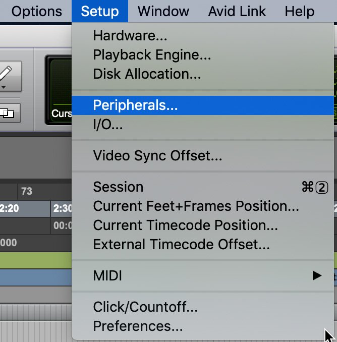
Dùng Mixer của Pro Tools
Giữ Shift, rồi nhấn pad Volume, Pan hoặc Sends (trong khung xanh) để điều khiển âm lượng track, pan và sends A và B bằng 8 núm của Launchkey Mini (trong khung đỏ).
Khi ở Sends mode, hai pad xanh dương trên hàng dưới sẽ chuyển giữa Send A và Send B. Pad xanh trái chọn Send A, pad xanh phải chọn Send.
Thiết lập Cubase
Để thiết lập Launchkey Mini trong Cubase, vào: Studio > Studio Setup. Tiếp theo tìm tùy chọn ‘MIDI port setup’.
Nhấp dấu + ở góc trên bên trái, và chọn ‘Mackie HUI’.
Cubase Setup: Chọn ‘Launchkey Mini MK3 DAW Port’ cho MIDI Input và MIDI Output. Cuối cùng, nhấn ‘Apply’ để bắt đầu dùng bộ điều khiển với Cubase.

Cubase Navigation
Trong Mixconsole của Cubase, giữ Shift và nhấn Arp hoặc Fixed Chord để chọn track trái hoặc phải của track hiện tại, tương ứng. Việc này cũng tự động arm track mới chọn.
Dùng Mixer của Cubase
Giữ Shift, rồi nhấn pad Volume, Pan hoặc Sends (trong khung xanh) để điều khiển âm lượng track, pan và sends A và B bằng 8 núm của Launchkey Mini (trong khung đỏ).
Khi ở Sends mode, hai pad xanh dương trên hàng dưới sẽ chuyển giữa Send A và Send B. Pad xanh trái chọn Send A, pad xanh phải chọn Send.


Cài đặt (Settings)
Để truy cập trang cài đặt, giữ nút [Shift] trong khi cấp nguồn cho Launchkey Mini. Sau khi đã thay đổi cài đặt, bạn có thể trở về điều khiển chính bằng cách nhấn nút [play]. Mọi thay đổi cài đặt đều được giữ qua các chu kỳ bật/tắt nguồn. Trang cài đặt trên Launchkey Mini sẽ xuất hiện với bố trí pad như sau.
LED Brightness (Độ sáng LED)
Để đổi độ sáng LED, trong trang cài đặt dùng nút [Octave up] để tăng độ sáng và nút [Octave Down] để giảm độ sáng.
Pad Velocity (Độ nhạy lực pad)
Để bật/tắt điều khiển Pad Velocity, nhấn pad cam [thứ 2 từ bên trái] trong trang cài đặt. Khi sáng mờ, pad sẽ xuất velocity không đổi ở mức 127. Khi pad sáng đầy, toàn bộ dải velocity sẽ được xuất từ pad.
MIDI Clock output
Cài đặt này cho phép bạn chọn có xuất tín hiệu MIDI Clock từ đầu ra MIDI của Launchkey Mini hay không. Việc này hữu ích để loại bỏ tín hiệu tempo/clock không mong muốn khi dùng Launchkey Mini làm bàn phím điều khiển cho thiết bị MIDI ngoài như máy trống, synth và sequencer.
Để bật/tắt MIDI Clock, nhấn pad tím [thứ 6 từ bên trái]. Khi sáng mờ, đầu ra MIDI vật lý sẽ không gửi tín hiệu MIDI clock. Khi sáng đầy, đầu ra MIDI sẽ gửi tín hiệu MIDI Clock và núm [Tempo] sẽ tiếp tục điều khiển tốc độ xuất MIDI Clock.
Vegas Mode
Nếu Launchkey Mini nhàn rỗi trong 5 phút, nó sẽ vào Vegas mode. Trong mode này, màu sắc sẽ cuộn qua các pad vô thời hạn cho đến khi một pad, nút, hoặc phím được nhấn.
Để bật/tắt Vegas mode, nhấn pad xanh dương [thứ 7 từ bên trái]. Nếu pad xanh sáng rực, Vegas mode đang bật.
Easy Start
Pad này cho phép bạn bật/tắt Easy Start mode. Theo mặc định, pad này sẽ bật khi bạn lần đầu dùng Launchkey, nhưng bạn sẽ được hướng dẫn tắt nó như một phần của quá trình thiết lập.
Quan trọng: Để sử dụng toàn bộ chức năng của Launchkey Mini [Mk3], hãy đảm bảo pad này sáng mờ.